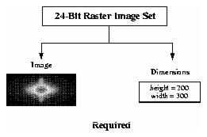
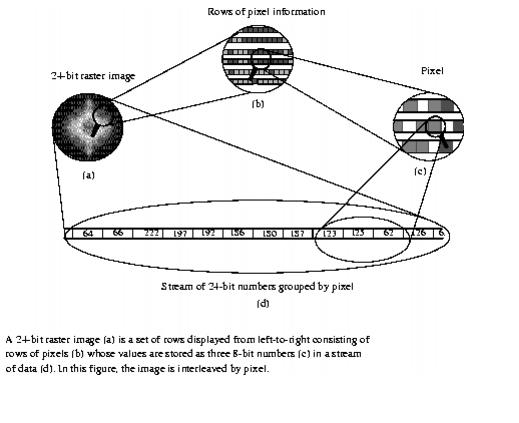
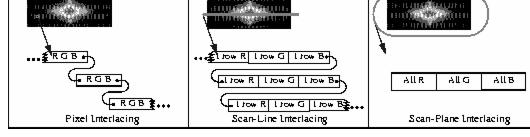

HDF User’s Guide
Version 4.2r4[Top] [Prev][Next]
|
|
HDF User’s GuideVersion 4.2r4 |
[Top] [Prev][Next] |
Chapter 7 -- 24-bit Raster Images (DF24 API)
7.1 Chapter Overview
This chapter describes the 24-bit raster data model and the single-file DF24 routines available for storing and retrieving 24-bit raster images.
7.2 The 24-Bit Raster Data Model
The 24-bit raster image set, or RIS24, data model supports two primary data objects: two-dimensional 24-bit raster images and dimensions. The primary member of the set is the 24-bit raster image, a two-dimensional array of pixels or picture elements. Each pixel is represented by three 8-bit numbers of image data. An optional compression method describes the method used, if any, to compress the image. Figure 7a shows the contents of a 24-bit raster image set.
FIGURE 7a 24-Bit Raster Image Set Contents7.2.1 Required 24-Bit Raster Image Data Set Objects
All 24-bit raster images must contain image data and a dimension record. These objects are created by the HDF library using information provided at the time the image is written to file.
7.2.1.1 24-Bit Raster Image Data Representation
The 24-bit raster image object contains a set of 24-bit pixel values, each of which has three 8-bit components; one for the red, one for the green, and one for the blue color component of the image. These values, referred to as RGB values, are arranged in one of three specific ways, as described in Section 7.2.2.2 on page 259. The pixel values are arranged in rows, painted from left-to-right, top-to-bottom. As each pixel in a 24-bit image is represented in the image data by three 8-bit numbers, palettes are unnecessary and are not included in the 24-bit raster data model.
As an example, consider a stream of 24-bit numbers representing a raster image (Fig. 4.1a). To display the image, the color associated with the first number in the data stream appears in the upper left corner of the image. The remainder of the first line is then painted from left-to-right using as many values from the data stream as necessary to complete the line. The remainder of the rows are similarly painted from left-to-right, top-to-bottom until every value in the data stream appears as one pixel in the image.
FIGURE 7b The Numerical Representation of a 24-Bit Raster Image7.2.1.2 24-Bit Raster Image Dimension
The dimensions of an image are the height and width of the image in pixels.
7.2.2 Optional 24-Bit Raster Image Data Set Objects
7.2.2.1 Compression Method
The only 24-bit compression method currently available in HDF is the JPEG algorithm . The applicable HDF compression tags are
COMP_JPEG, andCOMP_NONE. (See Table 7A.) The HDF tagsCOMP_JPEGandCOMP_NONEare defined as the values2, and0respectively in the "hdf.h" header file.TABLE 7A 24-Bit Raster Image Compression Method List
JPEG Compression
The JPEG compression method is a lossy compression algorithm whose use is recommended for photographic or scanned images. Using JPEG compression to reduce the size of an image changes the values of the pixels and therefore may alter the meaning of the corresponding data.
For more information on the JPEG algorithm, refer to Chapter 6, 8-Bit Raster Images (DFR8 API).
7.2.2.2 Interlace Modes
Because graphics applications and hardware devices vary in the way they access image data, HDF supports three interlace formats. By storing an image using a format that is consistent with the expected application or device, it is possible to achieve substantial improvements in performance.
HDF provides three options for organizing the color components in 24-bit raster images. These options consist of pixel interlacing, scan-line interlacing, and scan-plane interlacing. (See Figure 7c.) Storing the color components grouped by pixel, as in red-green-blue, red-green-blue, etc., is called pixel interlacing. Storing the color components by line, as in one row of red, one row of green, one row of blue, one row red, etc., is called scan-line interlacing. Finally, storing the color components grouped by color plane, as in the red components first, the green components second, and the blue components last, is called scan-plane interlacing. Unless otherwise specified, the HDF 24-bit raster model assumes that all 24-bit images are stored using pixel interlacing.
FIGURE 7c RGB Interlace Format for 24-Bit Raster ImagesAn interlace format describes both the physical format of an image as it is stored in memory and in the file. When writing to a file, HDF stores a 24-bit image using the same interlace format as it has in memory. However, when reading from a file, it is possible to make the in-core interlacing mode different from that used in the file. The following table contains a summary of the interlacing format available in the DF24 interface.
TABLE 7B 24-Bit Raster Image Interlace Format7.3 The 24-Bit Raster Interface
The HDF library currently contains several routines for storing 24-bit raster images in the HDF format. The DF24addimage, DF24putimage, and DF24getimage routines are sufficient for most reading and writing operations.
7.3.1 24-Bit Raster Image Library Routines
The names of all C routines in the 24-bit raster image interface are prefaced by "DF24". The equivalent FORTRAN-77 routines are prefaced by "d2". These routines are divided into the following categories:
The DF24 function calls are more explicitly defined in Table 7C and on their respective pages in the HDF Reference Manual.
TABLE 7C DF24 Library Routines7.4 Writing 24-Bit Raster Images
The DF24 programming model for writing a 24-bit raster image set is as follows:
Steps 1 and 2 can be invoked in any order, as long as they are executed before Step 3. By default, images are stored uncompressed using pixel interlacing.
7.4.1 Writing a 24-Bit Raster Image: DF24putimage and DF24addimage
To write a raster image to an HDF file, the calling program must contain one of the following function calls:
DF24putimage and DF24addimage write a 24-bit raster images to the HDF file specified by the filename parameter. When given a new file name, DF24putimage and DF24addimage create a new file and write the raster image as the first raster image in the file. If a file with the specified filename exists, DF24putimage overwrites the previous contents of the file whereas DF24addimage appends data to the end of the file.
DF24putimage and DF24addimage passes the raster data in the image parameter and the width and height of the image in the width and height parameters. The array image is assumed to be the width times the height times three bytes in length for each color component. The parameters for DF24putimage and DF24addimage are further defined below. Table 7D on page 262
TABLE 7D DF24putimage and DF24addimage Parameter ListEXAMPLE 1. Writing a 24-Bit Raster Image to an HDF FileIn the following examples, DF24addimage and d2aimg are used to write a 24-bit image to an HDF file named "Example1.hdf." DF24addimage assumes row-major order. Therefore, the FORTRAN-77 declaration requires the width (rows) before the height (columns), whereas the C declaration requires the height before the width. The interlace format setting is the default (pixel interlacing).
C:#include "hdf.h" #define WIDTH 5 #define HEIGHT 6 #define PIXEL_DEPTH 3 main( ) { /* Initialize the image array. */ static uint8 raster_data[HEIGHT][WIDTH][PIXEL_DEPTH] = { 1, 2, 3, 4, 5, 6, 7, 8, 9, 10,11,12, 13,14,15, 16,17,18, 19,20,21, 22,23,24, 25,26,27, 28,29,30, 31,32,33, 34,35,36, 37,38,39, 40,41,42, 43,44,45, 46,47,48, 49,50,51, 52,53,54, 55,56,57, 58,59,60, 61,62,63, 64,65,66, 67,68,69, 70,71,72, 73,74,75, 76,77,78, 79,80,81, 82,83,84, 85,86,87, 88,89,90 }; intn status; /* Write the 24-bit raster image to the HDF file. */ status = DF24addimage("Example1.hdf", (VOIDP)raster_data, WIDTH, \ HEIGHT); }FORTRAN:PROGRAM WRITE RIS24 integer status, d2aimg integer*4 WIDTH, HEIGHT, PIXEL_DEPTH parameter (WIDTH = 5, + HEIGHT = 6, + PIXEL_DEPTH = 3) character raster_data(PIXEL_DEPTH, WIDTH, HEIGHT) C Initialize the image array. data raster_data + / 1, 2, 3, 4, 5, 6, 7, 8, 9, 10,11,12, 13,14,15, + 16,17,18, 19,20,21, 22,23,24, 25,26,27, 28,29,30, + 31,32,33, 34,35,36, 37,38,39, 40,41,42, 43,44,45, + 46,47,48, 49,50,51, 52,53,54, 55,56,57, 58,59,60, + 61,62,63, 64,65,66, 67,68,69, 70,71,72, 73,74,75, + 76,77,78, 79,80,81, 82,83,84, 85,86,87, 88,89,90 / C Write the 24-bit raster image to the file. status = d2aimg('Example1.hdf', raster_data, WIDTH, + HEIGHT) end7.4.2 Setting the Interlace Format: DF24setil
DF24setil indicates the interlace format to be used for all subsequent write operations. DF24setil changes the default setting from pixel interlacing to the selected format. When the format is set, it acts as the default until it is reset by another call to DF24setil. To change the default interlace format , the calling program must contain the following routines:
DF24setil takes il as its only parameter. Valid values for il are
DFIL_PIXEL,DFIL_LINE, andDFIL_PLANE. The parameters for DF24setil are further defined below. Table 7E on page 265EXAMPLE 2. Writing 24-Bit Raster Images Using Scan-plane InterlacingIn the following examples, DF24addimage is used to write a 24-bit image to an HDF file called "Example2.hdf". The DF24setil function used here to change the default format setting from pixel interlacing to scan-plane interlacing.
C:#include "hdf.h" #include "hcomp.h" #define WIDTH 5 #define HEIGHT 6 #define PIXEL_DEPTH 3 main( ) { /* Initialize the image array. */ static uint8 raster_data[HEIGHT][WIDTH][PIXEL_DEPTH] = { 1, 2, 3, 4, 5, 6, 7, 8, 9, 10,11,12, 13,14,15, 16,17,18, 19,20,21, 22,23,24, 25,26,27, 28,29,30, 31,32,33, 34,35,36, 37,38,39, 40,41,42, 43,44,45, 46,47,48, 49,50,51, 52,53,54, 55,56,57, 58,59,60, 61,62,63, 64,65,66, 67,68,69, 70,71,72, 73,74,75, 76,77,78, 79,80,81, 82,83,84, 85,86,87, 88,89,90 }; intn status; /* Change interlace from pixel to scan-plane. */ status = DF24setil(DFIL_PLANE); /* Write the 24-bit image data to file. */ status = DF24addimage("Example2.hdf", (VOIDP)raster_data, WIDTH, HEIGHT); }FORTRAN:PROGRAM CHANGE INTERLACE integer status, d2aimg, d2setil integer*4 WIDTH, HEIGHT, PIXEL_DEPTH, DFIL_PLANE parameter (WIDTH = 5, + HEIGHT = 6, + PIXEL_DEPTH = 3, + DFIL_PLANE = 2) integer raster_data(PIXEL_DEPTH, WIDTH, HEIGHT) C Initialize the image array. data raster_data + / 1, 2, 3, 4, 5, 6, 7, 8, 9, 10,11,12, 13,14,15, + 16,17,18, 19,20,21, 22,23,24, 25,26,27, 28,29,30, + 31,32,33, 34,35,36, 37,38,39, 40,41,42, 43,44,45, + 46,47,48, 49,50,51, 52,53,54, 55,56,57, 58,59,60, + 61,62,63, 64,65,66, 67,68,69, 70,71,72, 73,74,75, + 76,77,78, 79,80,81, 82,83,84, 85,86,87, 88,89,90 / C Change interlace from pixel to scan plane. status = d2setil(DFIL_PLANE) C Write the 24-bit raster image to the file. status = d2aimg('Example2.hdf', raster_data, WIDTH, + HEIGHT) end7.4.3 Compressing Image Data: DF24setcompress and d2sjpeg
DF24setcompress invokes JPEG compression and sets the JPEG quality and baseline options. To store a 24-bit raster image using JPEG compression, the calling program must contain the following function calls:
Notice that the calling sequence for C is different from the calling sequence for FORTRAN-77. Once it is set, the parameter type in the DF24setcompress routine, or d2scomp in FORTRAN-77, routine specifies the compression method that will be used to store the raster images. However, the c_info parameter in DF24setcompress is missing from d2scomp which is a pointer to a structure that contains information specific to the compression method indicated by the type parameter. Because data structures of variable size are not supported in FORTRAN-77, a second compression-specific routine (d2sjpeg) is required in the FORTRAN-77 calling sequence.
For more information about the c_info structure refer to Chapter 6, 8-Bit Raster Images (DFR8 API).
Default values for quality and baseline (quality=75%, baseline=on) are used if c_info is a null structure or d2sjpeg is omitted. Parameters for DF24setcompress and d24sjpeg are further described in Table 7E below.
TABLE 7E DF24setil and DF24setcompress Parameter ListEXAMPLE 3. Compressing and Writing a 24-Bit Raster ImageIn the following examples, DF24addimage and DF24compress are used to compress a 24-bit image and write it to an HDF file named "Example2.hdf". Notice that compressing an image in C requires only one function call, whereas compressing an image using FORTRAN-77 requires two. The second FORTRAN-77 call is required because it is not valid to pass a structure as a parameter in FORTRAN-77.
C:#include "hdf.h" #include "hcomp.h" #define WIDTH 3 #define HEIGHT 5 #define PIXEL_DEPTH 3 main( ) { /* Initialize the image array. */ static uint8 raster_data[HEIGHT][WIDTH][PIXEL_DEPTH] = { 1, 2, 3, 4, 5, 6, 7, 8, 9, 10,11,12, 13,14,15, 16,17,18, 19,20,21, 22,23,24, 25,26,27, 28,29,30, 31,32,33, 34,35,36, 37,38,39, 40,41,42, 43,44,45 }; static comp_info compress_info; intn status; /* Initialize JPEG compression structure. */ compress_info.jpeg.quality = 60; compress_info.jpeg.force_baseline = 1; /* Set JPEG compression for storing the image. */ status = DF24setcompress(COMP_JPEG, &compress_info); /* Write the 24-bit image data to file. */ status = DF24addimage("Example2.hdf", (VOIDP)raster_data, WIDTH, HEIGHT); }FORTRAN:PROGRAM COMPRESS RIS24 integer d2aimg, d2scomp, d2sjpeg, status integer*4 WIDTH, HEIGHT, PIXEL_DEPTH parameter(WIDTH = 3, + HEIGHT = 5, + PIXEL_DEPTH = 3) character raster_data(PIXEL_DEPTH, WIDTH, HEIGHT) C Initialize the image array. data raster_data + / 1, 2, 3, 4, 5, 6, 7, 8, 9, + 10,11,12, 13,14,15, 16,17,18, + 19,20,21, 22,23,24, 25,26,27, + 28,29,30, 31,32,33, 34,35,36, + 37,38,39, 40,41,42, 43,44,45 / C Set compression. status = d2scomp(COMP_JPEG) C Set JPEG parameters to quality = 60, and turn compatibility on. status = d2sjpeg(60, 1) C Write the 24-bit image data to the HDF file. status = d2aimg('Example2.hdf', raster_data, WIDTH, HEIGHT) end7.5 Reading 24-Bit Raster Images
The DF24 programming model for reading a 24-bit raster image set is as follows:
7.5.1 Reading a Raster Image: DF24getimage
If the dimensions and interlace format of the image are known, DF24getimage is the only function call required to read a raster image. If a file is being opened for the first time, DF24getimage returns the first image in the file. Additional calls will return successive images in the file, therefore images are read in the same order in which they were written to the file. Normally, DF24getdims and DF24getil are called before DF24getimage so that, if necessary, space allocations and interlace format for the image can be checked and the dimensions verified. If this information is already known, both function calls may be omitted.
The syntax of the DF24getimage routine is as follows:
DF24getimage retrieves the next 24-bit image from the HDF file specified by the filename parameter. If the image is compressed, DF24getimage decompresses it and places it in memory at the location pointed to by the image parameter. DF24getimage assumes the data is stored using pixel interlacing. The space allocated to hold the image is specified by the width and height parameters and may be larger than the actual image.The parameters for DF24getimage are further defined below. Table 7F on page 268
7.5.2 Determining the Dimensions of an Image: DF24getdims
DF24getdims opens a named file, finds the next image or the first image if the file is being opened for the first time, retrieves the dimensions of the image, then determines the interlace format of the image. Images are read in the order they were written.
To determine the dimensions and interlace format for an image, the calling program must call the following routines:
DF24getdims takes four parameters: filename, width, height, and il. It retrieves dimension and interlace format information of the next 24-bit image stored in the HDF file specified by the filename parameter. The width and height are returned in the space pointed to by the width and height parameters respectively. The il parameter is used to determine the interlace format. The parameters for DF24getdims are further defined below. (See Table 7F.)
7.5.3 Modifying the Interlacing of an Image: DF24reqil
DF24reqil specifies an interlace format to be used when reading a 24-bit image from a file into memory. Regardless of what interlace format is used to store the image, DF24reqil forces the image to be loaded into memory using the specified interlace format.
To set or reset the interlace format, the calling program should call the following routines:
DF24reqil takes il as its only parameter. Valid il values are
DFIL_PIXEL,DFIL_LINEandDFIL_PLANE. As a call to DF24reqil may require a substantial reordering of the data, a much slower I/O performance than would be achieved if the interlace format wasn't reset may result.The parameters of DF24reqil is further defined below. (See Table 7F.)
TABLE 7F DF24getimage, DF24getdims and DF24reqil Parameter ListEXAMPLE 4. Reading a 24-Bit Raster Image from an HDF FileThe following examples read a 24-bit image from the "Example2.hdf" HDF file created in Example 2. Although the DF24getdims function call is optional, it is included as a demonstration of how to verify the image dimensions and interlace format before reading the image data. If the image dimensions and interlace format are known, only the DF24getimage call is required.
C:#include "hdf.h" #define WIDTH 5 #define HEIGHT 6 #define PIXEL_DEPTH 3 main( ) { uint8 raster_data[PIXEL_DEPTH][HEIGHT][WIDTH]; int32 width, height; intn interlace, status; /* Get the image dimensions from the HDF file. */ status = DF24getdims("Example2.hdf", &width, &height, &interlace); /* * Read raster data if the dimensions are * correct. */ if (width <= WIDTH && height <= HEIGHT) status = DF24getimage("Example2.hdf", (VOIDP)raster_data, width, height); }FORTRAN:PROGRAM READ RIS24 integer d2gimg, d2gdims, status, width, height, interlace integer*4 X_LENGTH, Y_LENGTH, PIXEL_DEPTH parameter(X_LENGTH = 5, Y_LENGTH = 6, PIXEL_DEPTH = 3) integer raster_data(PIXEL_DEPTH, X_LENGTH, Y_LENGTH) C Read the dimensions raster image. status = d2gdims('Example2.hdf', width, height, interlace) C Read image data from the HDF file if the dimensions are C correct. if (width .eq. X_LENGTH .and. height .eq. Y_LENGTH) then status = d2gimg('Example2.hdf', raster_data, width, height) endif end7.5.4 Reading a 24-Bit Raster Image with a Given Reference Number: DF24readref
DF24readref is used to access specific images stored in files containing multiple raster image sets. It is optionally used before DF24getimage. DF24readref can be used in connection with vgroups, which identify their members by tag/reference number pairs. See Chapter 5, Vgroups (V API), for a discussion of vgroups and tag/reference number pairs.
To access a specific raster image set, use the following sequence of routine calls:
DF24readref sets the reference number for the next read operation performed on the HDF file filename to the reference number contained in ref. Because reference numbers are not always assigned in sequence, it is not guaranteed that a reference number represents the location of the image in the file.
The parameters of DF24readref are further described in the following table.
TABLE 7G DF24readref Parameter List7.5.5 Specifying that the Next Image Read to be the First 24-Bit Raster
Image in the File: DF24restartDF24restart causes the next call to DF24getimage or DF24getdims to read from the first raster image set in the file, rather than the RIS24 following the one that was most recently read. Use the following call to invoke DF24restart:
TABLE 7H DF24restart Parameter List
7.6 24-Bit Raster Image Information Retrieval Routines
7.6.1 Querying the Total Number of Images in a File: DF24nimages
DF24nimages returns the total number of 24 -bit raster image sets in a file, and has the following syntax:
TABLE 7I DF24nimages Parameter List
7.6.2 Querying the Reference Number of the Most Recently Accessed 24-Bit
Raster Image: DF24lastrefDF24lastref returns the reference number of the 24-bit raster image most recently read or written. This routine is used for attaching annotations to images and adding images to vgroups. (See Chapter 5, Vgroups (V API) and Chapter 10, Annotations (AN API) for details on how to use reference numbers in connection with these applications.
The following calling sequence uses DF24lastref to find the reference number of the RIS24 most recently added to an HDF file:
DF24putimage or DF24getimage can be used in place of DF24addimage with similar results.
TABLE 7J DF24lastref Parameter List
|
HDF4.2r4 - February 2009 Copyright |
The HDF Group www.hdfgroup.org |